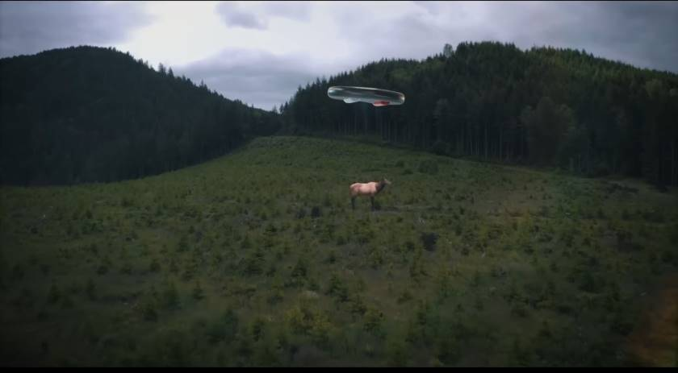
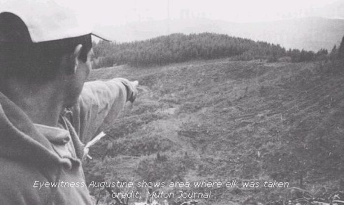

1999-02-25,WA,USA : 真昼、UFO がヘラジカを空中に吊り上げ持ち去る場面を複数の森林作業者が目撃 ⇒ この謎を解く （途中：その 4）
履歴
(2023-04-22) 追加。
(2023-04-02) 追加。タイトル変更。1999-02-25,WA,USA : 真昼、UFO がヘラジカを空中に吊り上げ持ち去る場面を複数の森林作業者が目撃 ⇒ この謎を解く （途中：その3） (2023-04-02)
(2020-02-03) 追加。1999-02-25 真昼、Wasington : UFO がヘラジカを空中に吊り上げ持ち去る場面を 3人の森林作業者が目撃。 （途中：その2） (2020-02-03)
(2020-02-01) 作成。1999-02-25 真昼、Wasington : UFO がヘラジカを空中に吊り上げ持ち去る場面を 3人の森林作業者が目撃。 （途中：その1） (2020-02-01)
(2023-04-22 begin)
前置き
気づいたらこの件に関する最後の記事から 3週間が経過してしまった。解決済み事件には関心が失せるのでこうなりがち。完全に忘れ去る前にざっと追記しておく。（そういえば、成瀬雅春の空中浮遊の捏造写真の手口の解説も放置したままだった。これも忘れぬ内に手を付けねば…）
手抜き
この事件については下の過去記事で 誤認/錯覚 だと述べた。
David Paulides はこの事件を重視して盛んに取り上げているが、彼は先入観に誘導されて重大な誤認というか、錯覚をしている。その誤認・錯覚は上の切り出し静止画にもそのまま反映されている。 ref: David Paulides : UFO がヘラジカを吊り上げた事件を語る (2023-04-09)
つまり、「UFO がヘラジカを吊り上げた」という森林作業員たちの証言は、 誤認/錯覚 でしかない。その根拠を以下で説明する。
目撃証言が 誤認/錯覚 である根拠
この事件を目撃した状況を過去記事から引用すると、以下の通りとなっている。
Shape of Object(s): Disc Number of Witnesses: Multiple No. of Object(s): 1 Size of Object(s): 7 to 8 feet Distance to Object(s): 800 yards --- 物体の形状(複数) 円盤 目撃者の数 複数名 オブジェクトの数 1 オブジェクトのサイズ（複数可） 7～8フィート 対象物までの距離 800ヤード
つまり、UFO は全長 2.0～2.5m で、その UFO を目撃者たちは 720m 離れた距離から目視した。ヘラジカと UFO のサイズは同程度。
さて、アメリカ人の若者の場合、正常な視力の持ち主は（日本でいうところの） 1.0 の視力に相当する。大人になれば視力は落ちるが以下では落ちていないと仮定する。視力 1.0 とは、国際眼科学会による視力の規定により
直径7.5ｍｍ、切れ目の間隔が1.5ｍｍのランドルト環を５ｍ離れたところから見分けられる人の視力
となっている(*1)。つまり、5m 先の 1.5mm の切れ目の有無が識別できる視力となる。
これは 720m 先では概算で
1.5/5000 * 720000 = 216[mm]
となる。20cm の長さの物体の有無が識別できる限界となる。対象の物体が 20cm 以下だと、その存在すら視認できなくなる。
UFO とヘラジカのサイズは 2.0～2.5m なので、最小分離閾のほぼ 10～12 倍程度となる。
さて、物体の有無が識別可能な最小サイズ（最小分離閾）が 20cm であるから、ヘラジカの特徴的な頭部の形状や脚の形状に基づいて、それがヘラジカであると認識することは無理であることがわかる。
この状況を分かりやすく説明すると、今、この画面を PC で見ているとすれば、次のようになる。720m 先の 2.5m のサイズのヘラジカや UFO は今、モニタ画面を 40cm 離れた位置から見ているとして、概算で
2.5/720*0.4 = 1.4e-3[m] = 1.4[mm]
のサイズに相当する。モニタの画素（ピクセル）は通常 0.32mm ほどであるから、4～5画素に相当する。
今、モニタ画面に全長 4～5画素のサイズの小さな「何か」が見えていたとする。その小さな「何か」（後述するようにそれは全く身動きせず静止しているとする）が小さな画像の一部なのか、蚤や虱なのか、蜘蛛の子なのか、画面に付着した汚れなのかをその細部の形状を視認することによって識別できるだろうか？ 当然、無理。私は 4Kモニタ画面の MS-Word の標準フォントサイズの文字を表示スケール 100% で画面から 70cm 離れた位置から無理なく読める視力があるが、その視力でも無理。
よって、次ののような David Paulides が制作した「Missing-411 と UFO の奇妙な関係」に関する最新のドキュメンタリーの中で描いた、この事件の再現映像（下）、 
は完全に間違っている。このような光景は、誰も見ることはできていなかった。
(*1)
果たして人間の目はどこまで見えるのでしょうか。 一般に視力とは物体の形やその存在を見分ける目の能力のことです。視力には次の4つがあります。 最小視認閾：どれだけ小さいものを見ることができるか 最小分離閾：どれだけ狭い間隔まで分離して見ることができるか 最小可読閾：どれだけ小さな文字や図形を弁別できるか 副尺視力 ：どれだけ細かな直線や輪郭のずれを検知できるか 通常の視力検査で測定しているのは最小分離閾で、ランドルト環を用いてその切れ目が見えるかどうかを調べています。直径7.5ｍｍ、切れ目の間隔が1.5ｍｍのランドルト環を５ｍ離れたところから見分けられる人の視力が1.0となります。視力2.0のランドルト環視標の切れ目の間隔は0.75ｍｍですから、５ｍ離れたところから１ｍｍにも満たない切れ目が見えるなんて驚きです。 ※ランドルト環とは1909年の国際眼科学会において定められた視標で、アルファベットのCのような形をしています。視力1.0をしめすランドルト環の大きさは直径7.5mm、太さ1.5mm、切れ目の幅1.5mmです。これを５mの距離から見ると視角１’(1/60度)となります。 ランドルト環 拡大図 組織学的に検討すると、光を感じる網膜の視細胞には錐体細胞と杆体細胞とがあります。錐体細胞は明るいときに働き、網膜上におよそ500万個あるといわれています。主に色覚と図形の形状識別（≒視力）をしています。一方、杆体細胞は暗いときに働き、網膜上に約１億個あるといわれていて、主に明暗の判別と動きの感知をしています。視力は錐体細胞に依存しており、ものをみる網膜の中心窩の錐体細胞の直径は約 2 μm、視角にして約 30 秒といわれています。視力 1.0は視角に換算すると１分に相当しますから、視力1.0のランドルト環の切れ目を認識しているのは、約2個の錐体細胞ということになります。つまり、網膜の細胞レベルでは1個の錐体細胞の大きさに相当する視力2.0程度が限界のように思われます。 ref: 目に関するあれこれ：人の目はどこまで見えるのか http://www.nanyo-eye.com/06section60.html
目撃者たちが見たものは何だったのか？
さて、目撃者たちは
・UFO に吊るされたヘラジカは身動きしなかった。
・UFO のサイズが縮小した
・吊るされたヘラジカが途中で消失した
と証言している。
…
…
…
(2023-04-22 end)
以下、新しい過去記事の方が上になるように並べている。
(2023-04-02 begin)
前置き
この事件に関する主な記事とその DeepL 訳を追加しておく。
以下のソース記事（の DeepL 訳）を読めば、この事件の謎が解ける筈。
ソース
The 1999 Washington State Elk Abduction Incident - UFO Insight </a>https://www.ufoinsight.com/aliens/abductions/washington-state-elk-abduction
引用 + DeepL
▼展開
The 1999 Washington State Elk Abduction Incident Marcus Lowth 12-15 minutes A truly bizarre incident from February 1999 near the forests and mountainous terrain of Washington State would see three farmworkers seemingly witness an attempted alien abduction of an elk, apparently singled out by the strange aerial craft. What is the truth behind the Washington State Elk Abduction? It is an interesting case for several reasons, not least due to there being multiple witnesses to the encounter. Furthermore, animal and cattle mutilations are known to have been reported in the state of Washington previously. It would appear that this was an animal abduction taking place right in the middle of the day, with multiple people witnessing it, to boot. The case remains unexplained today, despite two well-established UFO organization investigating the incident within days of it taking place. Just what happened that gray afternoon in the upper northwest? And what might it mean in relation to other cases of alien abduction and cattle mutilation? A Disc-Shaped Object Out Of The Dull Gray Sky Slightly before noon on a gray day on the 25th February 1999 three state forestry workers would witness an incident that would alter their lives greatly. [1] While planting seedling trees in the woodlands near Mount St. Helens in the upper northwest of the United States, a disc-shaped object came into view. It would slowly and calmly enter a valley, coming from the north of the three forestry workers’ position. As well as the calm manner with which it moved, there appeared a very “purposeful” nature of its movements. It was also completely silent as it cut through the air, the witnesses noticing a “wobble” as it did so. Why might aliens target animals? It was then that the three men called out to the rest of their crew (eleven more men in total), who were on a hill facing the other way. They would turn around and, along with the three initial witnesses, would watch the bizarre scenario unfold. It would become pretty obvious to the forestry crew that the bizarre craft was seemingly moving in the direction of a herd of elk nearby. For their part, the elk continued on as normal, apparently unaware or unconcerned with the approaching anomaly that was quickly seeming like an aerial Jaws heading toward its prey. Only when the metallic disc was almost on top of the herd did they begin to become agitated and aware of its strange presence. Then, an already bizarre incident became even stranger. Separated From The Herd Although no one seemed to see the exact circumstances, one of the elk quickly became isolated from the rest of the herd. It was, according to the witnesses, quite obviously an adult elk, so it’s possible it was a conscious decision to draw attention away from the others. Whatever the reason, though, the object soon zeroed in its attention to the separated animal. The members of the forestry work crew watched in disbelief as the object hovered directly over the top of the lone animal. Then, the stricken elk seemingly rose into the air as if a pair of huge and invisible hands had lifted it. The “wobble” of the object would get decisively worse at this stage. The elk, however, would remain firmly in the invisible grip of the bizarre disc-shaped craft. The object began to move upwards slightly. As it did so, the elk would rotate under it while also appearing to get closer to the actual disc itself. Initially, the object, still with the elk hovering below and moving in unison as if suspended by an invisible rope, would head towards the east. However, after first moving back to the west and then performing a complete 360-degree turn, it would begin to ascend. And it would do so at a greatly increased speed than it previously moved. Also, at this stage, the elk was no longer visible. As no one had seen it drop to the ground, it was assumed by the witnesses at this stage that the captured animal must have somehow been taken inside the strange craft. Immediate Report And Investigation The witnesses would claim that the rest of the elk remained tightly packed together as if for protection. Furthermore, they, whether consciously or not, did the same, working for the remainder of the day within close proximity of each other. On 1st March, just under a week later, a report of the incident was made to the National UFO Reporting Center (NUFORC). They would go out to the location in question. However, NUFORC’s director, Peter Davenport, would also contact the Director of Investigations for the MUFON branch in the state of Washington, Robert Fairfax, who would assist in leading the investigation. The field where the UFO activity took place They would speak to the three main witnesses as well as inspect the location of the sighting for themselves. Furthermore, they would also witness the corpse of an adult and pregnant elk that was discovered along a roadside several miles away by another group of forestry workers. Whether this was the elk that was “taken” is uncertain. However, it is highly likely that it was. Even stranger, there was no obvious injuries, wounds, or mutilations to the elk. As Davenport would state, “it was healthy, albeit it was dead”. Not even one single broken bone was found from an apparent fall to the ground. It was as if the animal had been placed where it lay, or simply lay down of its own accord. Perhaps even stranger, despite other signs of dead animals almost immediately becoming prey to the many wild scavengers of the area, none would seemingly touch the body of the dead elk. Despite it laying where it was found for at least eight days. A Genuine And Credible Mystery? Although the incident remains without a full and satisfactory explanation, it remains one of the most intriguing encounters on record. And certainly, one that many would agree is credible. For example, of the witnesses, Davenport would highlight how some of them had worked for the company in the area for almost 20 years. It wasn’t “likely that they would risk their jobs to pull a stunt” and make up such a drastic story. Furthermore, it was his stern belief that the witnesses were “sincere and believable”. Further still, although the corporation employing the workers wished to remain anonymous, they would vouch for each of the witness’s credibility. Perhaps another indication of their genuineness was their insistence to a person that there be no publicity from the incident. Initially, the entire group was intent on keeping the incident between themselves only. However, when their supervisor saw them later in the day, it was immediately obvious something was wrong. Ultimately, however, he would “have to pry it out of them”. Some would even go on to state they had suffered bizarre and persistent nightmares in the weeks that followed. We should perhaps also note, as Davenport does, that the incident occurred on privately owned land. The landowners had been more than happy to allow investigators access to the site. However, they didn’t want the location made public. This means, as Davenport states, the lack of detail on the location could be used by skeptics to dismiss the case entirely. Further Fascinating Details From A Fascinating Case Follow-up reports would suggest that many of the witnesses would develop an interest in UFOs following the incident. Whether this is an expected reaction or not is perhaps down to opinion. Many would state to investigators several weeks later that many members of their own families refused to believe their account. Many of them also become extremely uncomfortable whenever they had work anywhere near to the location of the incident. This would continue for some time. Some further extraordinary details would also come to light in the weeks following the encounter. For example, one of the witnesses would claim it appeared as though the craft was actually “increasing in size” shortly after capturing the elk. Another witness, however, would wonder whether this was a “trick of the light” and the overall angle of the craft. What is intriguing, however, are the reports of “strange lights” or “flashes” during this precise time. One UFO researcher questioned whether these lights and the apparent increase in size of the craft may have actually been “plasma”, which is often witnessed around orb-like sightings. This would also suggest that the craft, as solid as it appeared, was much more flexible. Perhaps even stranger with this in mind are the comments of one of the witnesses. They would claim that he could shake the notion that the craft was actually some kind of ancient prehistoric animal. The Stevens Pass Incident Perhaps it is also worth mentioning if only in brief, another sighting in the mountain regions of Washington State that took place a little over a year later in the summer of 2000. The account was broadcast on local radio. It would claim that several witnesses rang in to report a strange “round, green object” in the skies near the mountain regions. Furthermore, both government and private radar had also picked up the sighting (this remains unofficial, however). One witness, a driver with several passengers in his vehicle, would state how they had been forced down Goat Trail Road because of repairs to the main highway. As they made their way along the road, however, they would witness the bright green object hovering in the air. Every now and then it would move up or down and then come back into its resting position. Then, without warning, it would take off with breakneck speed. Rather unbelievably, even to the witness, despite him bringing the vehicle to a stop for several moments, none of his passengers witnessed the bizarre aerial display. The witness would continue on with his journey. He would eventually speak of the sighting to close friends and family, none of whom would initially believe him. That was until the aforementioned report on the radio around a week or so later. However, following this, the witness didn’t hear anything else about the sighting. Nor did he manage to find any other witnesses to the incident. Whether there is a connection to the Elk abduction the previous year is not clear. That strange aerial activity is taking place in the mountains and forests of Washington State, however, is perhaps something we can state is happening with a lot more clarity. That Old Question – Aliens? Or Shadow Government? Undoubtedly the encounter is one of the most bizarre and disturbing. Whatever did happen that afternoon near Mount St. Helens it would certainly appear to be something significant enough to unsettle 14 grown men. Ones, in some cases, with years of experience working in the outdoors and wilderness of the Washington state environment. What intelligence was behind the strange craft? Is it some kind of top-secret military drone-type weapon? And if so, what kinds of experiments would it be conducting on animals such as elk? Or might the intelligence belong to an extraterrestrial visitor? And if that is the case, is this even more worrying than a secret military project? Just what are the reasons for their actions? Might they view humans much the same as the separated elk, essentially fair game? And what of the state of the dead elk itself, if we assume the carcass on the roadside was indeed the same as the one taken by the disc-shaped craft? The lack of injuries means the actual cause of its death remains a mystery. Why did it not succumb to the scavengers who were quick to strip similar bodies of their flesh upon death? Let’s assume once more that this was indeed the same elk as the forestry workers witnessed. Can we also assume there was some form of radiation of contamination that such scavengers noticed? Or might it be something much more primal that keeps such predators away? Something that they could sense that unnerved them and urged them to keep their distance? Whether any further information of the incident comes to light, only time will tell. The case, though, remains one of the most intriguing on record. Check out the video below. It looks animals and aliens in a little more detail.
1999年ワシントン州エルク誘拐事件 マーカス・ロウズ 12～15分
1999年2月、ワシントン州の森と山の近くで起こった奇妙な事件は、3人の農民がヘラジカの誘拐未遂を目撃し、奇妙な空撮機によって特別視されたようだった。
ワシントン州のヘラジカ誘拐事件の真相は？
この事件は、複数の目撃者がいることもさることながら、いくつかの理由で興味深い。さらに、ワシントン州では以前から動物や牛の切断が報告されていることも知られている。つまり、この事件は、昼間に起きた動物誘拐事件であり、しかも複数の人が目撃しているのである。
この事件は、2つの有名なUFO団体が数日以内に調査しているにもかかわらず、現在も解明されていない。あの灰色の午後、北西部で何が起こったのか？そして、この事件は、他のエイリアン・アブダクションやキャトル・ミューティレーションとどう関係しているのだろうか？
灰色の空から円盤状の物体が現れた。
1999年2月25日、灰色の日の正午前、3人の州営林作業員が、彼らの人生を大きく変えることになる事件を目撃することになる。[1] アメリカ北西部、セントヘレンズ山付近の森林地帯で苗木を植えていると、円盤状の物体が視界に入った。それは、3人の林業従事者の位置の北側から、ゆっくりと穏やかに谷間に入ってくるのである。
その動きは、穏やかであると同時に、非常に「目的意識」があるように見えた。また、空を切り裂くように完全に無音で、目撃者はその際に「ぐらつき」に気づいたという。
なぜ、宇宙人は動物を狙うのか？
その時、3人の男は、反対側の丘にいた残りの仲間（合計11人）に呼びかけた。彼らは振り向き、最初の目撃者3人とともに、奇妙なシナリオが展開されるのを見ることになる。
林業関係者の目には、その奇妙な機体が近くのヘラジカの群れの方向へ動いているように見えた。ヘラジカたちは、まるで空中のジョーズが獲物に向かっているような異変に気づかず、あるいは気にすることもなく、いつもと同じように過ごしていた。
金属製の円盤が群れのほぼ真上に来たとき、彼らは動揺し始め、その奇妙な存在に気づき始めた。そして、ただでさえ奇妙な事件が、さらに奇妙になった。 群れから切り離される
誰も正確な状況を見ていないようだが、1頭のヘラジカがあっという間に他の群れから孤立してしまった。目撃者によれば、それは明らかに大人のエルクであったというから、他の群れから注意を引くための意識的な行動であった可能性もある。しかし、その理由はともかく、その物体はすぐに、離れている動物に注目するようになった。
林業作業員たちは、その物体が一頭の動物の真上でホバリングしているのを信じられない思いで見ていた。すると、そのヘラジカは、まるで見えない巨大な手で持ち上げられたかのように宙に浮いた。
このとき、物体の "ぐらつき "は決定的に悪化していた。しかし、ヘラジカは円盤型の奇妙な機体にしっかりと掴まれたままである。
物体が少しずつ上に向かって動き出した。すると、ヘラジカはその下を回転しながら、円盤に近づいていくように見える。
最初は、ヘラジカが下にいて、見えないロープで吊るされたように一体となって動いていた物体は、東の方角に向かっていた。しかし、一旦西に戻り、360度回転した後、上昇を始める。しかも、そのスピードは、それまでよりはるかに速い。
また、この段階でヘラジカの姿は見えなくなった。地面に落ちる姿は誰も見ていないので、この段階で目撃者たちは、捕獲された動物は何らかの方法で奇妙な機体の中に連れて行かれたのだろうと考えていた。 即時報告・調査
目撃者の証言によると、他のエルクたちは、まるで身を守るかのように、しっかりと固まっていたそうです。さらに、彼らは意識的であろうとなかろうと、同じように、その日一日、互いに接近して仕事をした。
それから1週間弱経った3月1日、全米UFO報告センター（NUFORC）にこの事件の報告がなされた。彼らは問題の場所に出向くことになる。しかし、NUFORCのディレクターであるピーター・ダベンポートは、ワシントン州のMUFON支部の調査ディレクターであるロバート・フェアファックスにも連絡を取り、調査の指揮を執ることになるのです。
UFO活動が行われたフィールド
そして、3人の目撃者に話を聞くとともに、自分たちの目で目撃場所を確認する。さらに、数キロ離れた道路脇で、林業関係者が発見した成獣と妊娠したヘラジカの死体も目撃することになる。これが「連れ去られた」ヘラジカなのかどうかはわからない。しかし、その可能性は極めて高い。
さらに不思議なことに、そのヘラジカには明らかな怪我や傷、切り傷がない。ダベンポートが言うように、「死んでいるとはいえ、健康だった」のである。地面に落ちたと思われる骨も、1本も折れていない。まるで、その場に置かれた、あるいは勝手に横たわったかのようである。
さらに不思議なことに、死んだ動物はすぐにその辺の野生動物の餌食になるのに、このヘラジカの死体には誰も手をつけようとしない。少なくとも8日間も放置されていたにもかかわらず、である。 真偽のほどは不明だが......。
この事件は、いまだに十分な説明がつかないままであるが、記録上最も興味深い出会いのひとつであることは確かである。そして、多くの人がその信憑性に同意している。
例えば、ダベンポートは、目撃者の中に20年近くその地域の会社に勤めていた人がいることを強調する。彼らが職を賭してまで、そんな思い切った話をするわけがない」。しかも、その目撃者が「誠実で信じられる人たち」であるというのが、彼の厳然たる信念であった。さらに、雇い主である企業は匿名を希望していたが、証人の信用を保証してくれた。
また、「この事件を世間に公表しないでほしい」と強く訴えたことも、彼らの真摯な姿勢を表している。当初、グループ全員がこの事件を自分たちだけのものにしようと考えていた。しかし、後日、上司が彼らを見たとき、何かがおかしいとすぐにわかった。しかし、最終的には、上司が「こじ開けなければならない」という。
その後数週間、奇妙でしつこい悪夢にうなされたという人もいた。
また、ダベンポートが言うように、この事件が私有地で起きたことも忘れてはならない。地主たちは、捜査当局の立ち入りを快く許可してくれた。しかし、彼らはその場所を公表することを望まなかった。つまり、ダベンポートが言うように、場所に関する詳細な情報がないため、懐疑論者がこの事件を完全に否定するために利用することができる。 魅力的な事件から、さらに魅力的な詳細を探る
この事件後、目撃者の多くがUFOに興味を持つようになったという報告もある。これが予想された反応かどうかは、おそらく意見の分かれるところでしょう。また、数週間後、多くの人が、自分の家族の多くが自分たちの話を信じようとしなかったと、調査官に語っている。
また、彼らの多くは、事件のあった場所の近くで仕事をするたびに、非常に不快な思いをするようになった。これはしばらく続く。
さらに、この事件から数週間後、いくつかの驚くべき事実が明らかになった。例えば、目撃者の一人は、ヘラジカを捕獲した直後、機体が実際に「サイズアップ」しているように見えたと主張した。しかし、別の目撃者は、これが「光のトリック」なのか、機体の全体的な角度を疑っている。
しかし、興味深いのは、この時間帯に「奇妙な光」や「閃光」が見えたという報告である。あるUFO研究者は、これらの光とクラフトの明らかなサイズアップは、実際にオーブのような目撃情報の周りにしばしば目撃される「プラズマ」であったかもしれないと疑問を呈している。そうであれば、その機体は、見た目は固いが、もっと柔軟なものであったということになる。
このことを考えると、さらに不思議なのは、目撃者の一人のコメントである。その目撃者の一人は、「あれは先史時代の古代動物だったのではないか」と語っている。 スティーブンス・パス事件
それから1年余り経った2000年の夏、ワシントン州の山岳地帯で目撃されたことも、簡単にではあるが紹介しておきたい。この目撃談は地元のラジオで放送された。山間部の上空に「緑色の丸い物体」が見えたと、複数の目撃情報が寄せられたという。さらに、政府機関や民間のレーダーもその目撃情報をキャッチしていた（ただし、これは非公式）。
目撃者の一人は、数人の乗客を乗せた運転手で、幹線道路の修理のため、ゴート・トレイル・ロードを通らざるを得なかったと述べている。しかし、道路に沿って進むと、空中に明るい緑色の物体がホバリングしているのを目撃しました。時々、上下に動き、また元の位置に戻ってくる。
そして、何の前触れもなく、猛スピードで飛び立っていく。目撃者にとっても信じられないことだが、彼が車をしばらく停車させたにもかかわらず、同乗者は誰もその奇妙な空中散歩を目撃しなかった。
目撃者はそのまま旅を続けることになる。やがて、その目撃談を親しい友人や家族に話すが、誰も信じてはくれない。しかし、1週間ほどして、ラジオでそのことが報道された。しかし、それ以後、目撃談を聞くことはなかった。また、他に目撃者を見つけることもできなかった。
前年のエルク誘拐事件との関連は不明である。しかし、ワシントン州の山や森で奇妙な空中活動が起きていることは、もっとはっきりした事実として言えるかもしれない。 昔からの疑問、宇宙人？それともシャドウ・ガバメント？
間違いなく、この遭遇は最も奇妙で不穏なものの1つである。その日の午後、セントヘレンズ山の近くで何が起こったにせよ、14人の成人男性を不安にさせるに十分な重大な出来事であったことは間違いないだろう。その中には、ワシントン州のアウトドアや荒野で何年も働いた経験のある人もいた。
この奇妙な機体の背後には、どのような情報が隠されていたのだろうか。軍用ドローンのような極秘兵器なのだろうか？もしそうなら、ヘラジカのような動物にどんな実験をしているのだろう？
それとも、地球外からの訪問者のものなのだろうか？もしそうだとしたら、軍事的な極秘プロジェクトよりも、もっと心配なことがあるのではないだろうか？彼らの行動の理由は何なのだろうか。彼らは人間を、分離されたヘラジカと同じように、本質的にフェアなゲームとして見ているのだろうか？
また、道端にあった死骸が、円盤型の機体に連れ去られたものと同じだとすると、ヘラジカの死骸の状態はどうなのだろうか。傷もなく、死因は謎のままである。なぜ、同じような死体から肉を剥ぎ取るスカベンジャーに屈しなかったのだろうか？
仮にこのヘラジカが、林業関係者が目撃したヘラジカと同じものだったとしよう。そして、そのスカベンジャーたちが気づいたのは、何らかの放射能汚染であったと考えることができるだろうか。あるいは、もっと原始的な何かが、捕食者を遠ざけているのだろうか。あるいは、もっと原始的なもので、肉食動物を寄せ付けないのだろうか。
この事件の続報が出るかどうかは、時間が経たなければわからない。しかし、この事件は、記録上最も興味深いものの1つであることに変わりはない。
下のビデオをご覧ください。動物やエイリアンの様子がもう少し詳しく描かれています。
動画（6:03）
ソース
Washington Elk Abducted by UFO </a>https://www.mufonohio.com/mufono/Washington%20Elk%20Abducted%20by%20UFO.html
原文＋DeepL
▼展開
Washington Elk Abducted by UFO 7-9 minutes MUFON of Ohio Elk Abducted by UFO by George Filer MUFON Eastern Director This article appeared initially in Mr. Filers Filer’s Files #11-1999 on March 19, 1999. Mr. Filer’s digital newsletter always contains interesting information. We feel this report is unusual enough to be included here for those of you who do not have access to his newsletter. WA MUFON Director of Investigations Robert A. Fairfax, and the Director of National Reporting Center, Peter Davenport drove down to the Mt. St. Helens area to investigate a phenomenal case—the daytime elk abduction witnessed by 14 forestry workers. Peter reports: "The crew was planting trees on February 25, 1999. A herd of elk was grazing about 280 feet down slope and to the north of them (about 1600 feet away). Just before noon, a small UFO flew slowly over the ridge and wobbled its way down toward the herd. About 100 feet from contact with the herd, the animals become aware of the craft and run uphill to the east. One of the elk separates somewhat from the rest and the UFO pursues it. Without pause the craft goes over the animal at a height that might have brushed the elk’s head. The craft with the elk dangling beneath then starts ascending to the northeast. The witnesses added that shortly after lifting the elk off the ground, the object seemed to begin to "wobble" to a more pronounced degree than it had exhibited earlier. The object seemed to be having trouble with the extra weight. "As the object appeared to increase its altitude, the elk, which was suspended upright below the disc, rotated slowly beneath it and appeared to be getting closer to the central surface of the disc. The elk is slowly rotating but no other movement from the animal is detected. When the craft reaches the end of the clear-cut and encounters the tree line the elk is almost totally inside, however the craft is not high enough to clear the treetops. It is thought that the treetops might have been hit. They also commented that the object seemed to increase in size slightly after it had picked up the animal. With the elk suspended below it, the object began to ascend slowly up a clear-cut slope to the east. However, the witnesses watched it apparently brush the tops of nearby trees to the east, at which point it reversed its course and proceeded to the west. "The witnesses stated that once the object had started to ascend and had climbed to an altitude above their vantage point, they no longer could see the animal suspended below the craft. Their presumption was that the animal had somehow been taken into the craft. The witnesses could discern no "door," or any kind of aperture through which the animal might have been conveyed into the craft. The craft circled (after much wobbling) 360 degrees; gaining altitude then ascended nearly vertically until it was lost from sight in the clouds. "We found a dead elk two miles or so from the sight. However, there were no mutilation marks discernible, no gunshot wounds found, and no broken bones from a fall. The large female elk appeared healthy albeit dead. We were on the site 8 days after the event. No scavengers had attacked the elk body. We found a dead porcupine on the drive out with a scavenger bird picking at the remains. "A large corporation and another company are involved in the investigation, but want their names kept secret. Robert Fairfax stated this is an excellent sighting because of these 5 factors that point to a real event. (1) The 14 forestry workers were working on contract for a large corporation with a number of individuals that had worked for 15 to 20 years with the same company. It is not likely that they would risk their jobs to pull a stunt. The forestry people were sincere and believable. (2) The corporation (which must remain unnamed at their request) vouched for the past integrity of the individuals who are all hard working family men that work in inclement weather conditions without any complaints. (3) The voice tone and body language during interviewing left me with no doubt that they had been frightened, awed, confused and were telling the truth. (4) Details that would generally not be known to ordinary people, e.g., (i) the description of the oscillating wobble traveling 360 degrees around the circumference of the craft. (ii) that the elk herd gathered together in a tight group for the rest of the afternoon after the one was abducted. (iii) the humans grouped together for the rest of the afternoon also. (5) Some reported having continued nightmares after the fact. (6) They wanted absolutely no publicity and they were not even going to tell anyone about it. A corporate supervisor (not at the site but seeing the group later) noticed that the whole group appeared frightened by something and the supervisor had to pry it out them." It appears that this incident happened on privately owned land. The owners reportedly want their property and their names kept confidential. While this hasn’t limited access to the area by the primary investigators, they may be unable to reveal exactly where this occurred in their final report. Thus, critics may use this as a way to demean the event. Thanks to Robert A. Fairfax and G. Knowles, WA State Director, Walter Sheets and Peter Davenport for this report. An update to this case appeared in Filer’s Files #12-1999. Mr. Filer contacted Mr. Robert A. Fairfax to see if he had more details on the case. Part of Mr. Fairfax’s response follows. Filer: "I am particularly interested in the description of the craft itself." Fairfax: "So am I; this is one of the areas we will try and nail. There were two flashes described as the craft wobbled. A fluorescent magenta (top) and a white (bottom). These were apparently not lights but seemed to be areas on the surface. They were seen intermittently but again we will need to pin the details down along with many others." Filer: "What was the direction of flight and the last known direction of travel?" Fairfax: "It was first seen in the SE traveling toward the NNW. It departed slowly to the NE, and then made a near vertical ascent into cloud cover." Filer: "Did they notice any kind of plasma, lighting, or electrical effects around the craft?" Fairfax: "Possibly, the two bright color areas. The craft seemed to increase in size as it was capturing the elk. We’re trying to clarify that." Filer: "Did the craft tilt as it changed direction?" Fairfax: "Wobbling was reported that was more pronounced before direction changes, but we need to verify with more witnesses. Filer" "Did they notice a hum or sound?" Fairfax: "There was no sound." Filer: "Did you notice the height of the trees or the approximate height and distance from picking up the elk to the top of the trees?" Fairfax: "Yes, but no precise calculations have been done. It had plenty of room to maneuver and climb." Filer: "Did they notice any windows?" Fairfax: "There were no windows."
ワシントン州のエルクがUFOに拉致される
7～9分
オハイオ州のMUFON
UFOに拉致されたエルク
ジョージ・ファイラー著
MUFON東部ディレクター
この記事は、1999年3月19日にMr.FilerのFiler's Files #11-1999に最初に掲載されたものです。Filer氏のデジタルニュースレターには、いつも興味深い情報が掲載されています。このレポートは、彼のニュースレターにアクセスできない方々のために、ここに掲載するほど珍しいものだと感じています。
WA MUFONの調査ディレクターであるロバート・A・フェアファックスとナショナル・レポート・センターのディレクターであるピーター・ダベンポートは、14人の林業労働者が目撃した日中のエルク誘拐事件を調査するためにセントヘレンズ山周辺に車を走らせました。ピーターが報告する： 「1999年2月25日、作業員たちは植林をしていた。エルクの群れは、約280フィートの斜面下と彼らの北側（約1600フィート先）で草を食んでいました。正午前、小さなUFOが尾根の上をゆっくりと飛び、群れの方へふらふらと降りていった。群れとの接触から約100フィート離れたところで、動物たちは工芸品に気づき、東へ坂を駆け上がる。エルクの1つが他のものからいくらか離れて、UFOはそれを追いかける。UFOは間髪入れずに、ヘラジカの頭をかすめるかもしれない高さで動物の上を通過した。ヘラジカが下にぶら下がったまま、機体は北東に向かって上昇し始めた。目撃者は、ヘラジカを地面から引き上げた直後、その物体は以前より顕著に「ぐらぐら」し始めたように見えたと付け加えた。その物体は、余分な重量に困っているようだった。
"物体が高度を上げるように見えると、円盤の下に直立して吊るされていたヘラジカは、その下でゆっくりと回転し、円盤の中心面に近づいているように見えました。ヘラジカはゆっくりと回転しているが、動物からの他の動きは検出されない。伐採地の端に到達し、樹林帯に差し掛かったとき、ヘラジカはほとんど中に入っているが、梢を越えるほどの高さには達していない。梢にぶつかったのではないかと思われる。また、その物体は動物を拾った後、少し大きさを増したように見えたとコメントしている。ヘラジカを吊り下げたまま、物体は東側の見通しの良い斜面をゆっくりと登り始めた。しかし、目撃者は、物体が東の近くの樹木の頂上をかすめたように見えるのを見、その時、物体はコースを反転して西に進んだ。
「目撃者は、物体が上昇を開始し、彼らの見晴らしの良い場所の上空まで上昇した後、彼らはもはや工芸品の下に吊り下げられた動物を見ることができなかったと述べました。彼らの推定では、動物は何らかの形でクラフトの中に取り込まれたようです。目撃者は、動物が船内に運ばれたかもしれない「ドア」、または任意の種類の開口部を見分けることができませんでした。クラフトは（多くのぐらつきの後に）360度旋回し、高度を上げ、ほぼ垂直に上昇し、それは雲の中で見えなくなった。
"私たちは、その光景から2マイルほど離れたところで、死んだエルクを見つけた。しかし、切断の跡はなく、銃で撃たれた傷もなく、落下による骨折もない。大きなメスのヘラジカは、死んでいるとはいえ、元気そうだった。私たちは事件から8日後に現地に赴いた。ヘラジカの死体に襲いかかる獲物はいなかった。車で出かけた先でヤマアラシの死骸を見つけたが、その死骸を拾っているのは糞食い鳥だった。
"大企業と別会社が捜査に関与しているが 名前は伏せて欲しい" と ロバート・フェアファクスは、この目撃情報が素晴らしいものであると述べています。それは、実際の出来事を指し示す次の5つの要素によるものです。(1) 14人の林業従事者は、大企業の契約社員で、同じ会社で15年から20年働いていた人たちが多数いた。彼らが自分の職を賭してまで悪ふざけをするとは考えられない。林業関係者は誠実で信じられる人たちだった。(2)企業（企業側の意向で名前は伏せますが）は、悪天候の中でも文句を言わずに働く勤勉な家族思いの人たちの過去の誠実さを保証してくれました。(3) インタビュー中の声のトーンやボディランゲージから、彼らがおびえ、畏怖し、混乱し、真実を語っていることに疑いの余地はない。(4) 一般には知られていない詳細、例えば、(i)振動するぐらつきがクラフトの円周を360度回っているという記述。(ii) 一人が誘拐された後、エルクの群れが午後の残りの時間、密集して集まっていたこと。(iii)人間もまた、午後の残りの間、一緒にグループ化した。(5)この事件の後、悪夢を見続けたという人もいた。(6)彼らは全く宣伝を望んでおらず、そのことを誰にも話すつもりもなかった。会社の上司（その場にはいなかったが、後でそのグループを見た）が、グループ全員が何かに怯えているように見えたので、その上司はそれを聞き出さなければならなかった。"
この事件は、私有地で起こったようです。所有者は自分の土地と名前を秘密にすることを望んでいると伝えられています。このため、第一次調査官によるその地域へのアクセスは制限されていないが、最終報告書では、この事件が起こった場所を正確に明かすことはできないかもしれない。批評家たちは、このことを利用して、この事件を貶めるかもしれない。
この報告書については、ロバート・A・フェアファックス、G・ノールズ、WA州ディレクター、ウォルター・シーツ、ピーター・ダベンポートに感謝する。
この件に関する最新情報は、Filer's Files #12-1999に掲載されています。Filer氏は、Robert A. Fairfax氏に、この件に関する詳細な情報を持っていないか問い合わせた。フェアファクス氏の回答の一部は以下の通りです。
ファイラー "私は特に工芸品そのものの記述に興味があります。"
フェアファクスです： "私もそうです。" "これは私たちが解明を試みる分野の一つです。クラフトが揺れたと説明された2つのフラッシュがあった。蛍光色のマゼンタ（上）と白（下）である。これらは明らかにライトでなかったが、表面上の領域であるように思われた。それらは断続的に見られたが、再び我々は他の多くのものと一緒に詳細を突き止める必要がある".
ファイラー "飛行方向と最後に確認された進行方向は？"
フェアファクスです： フェアファクス: "それは、北西に向かって移動するSEで最初に目撃されました。それは北東にゆっくりと出発し、雲の中にほぼ垂直に上昇しました。"
ファイラー "機体の周囲にプラズマや照明、電気的な効果を感じたか？"
フェアファックス "おそらく、2つの明るい色の領域があります。ヘラジカを捕獲している間、機体が大きくなったように見えた。それを明らかにしようとしています。"
ファイラー "方向転換の際、機体は傾いたか?"
フェアファクスです： "方向転換の前に、より顕著なふらつきが報告されましたが、より多くの目撃者に確認する必要があります。
Filer""彼らはハムや音に気づきましたか？"
Fairfax： "音はありませんでした。"
ファイラー "木の高さ、またはヘラジカを拾ってから木の上までのおおよその高さと距離に気づきましたか?"
フェアファクスです： "はい、しかし、正確な計算はしていません。操縦や登攀には十分なスペースがありました。"
ファイラーです： "窓があることに気づきましたか？"
フェアファクスです： "窓はありませんでした"
ソース
1999: The Washington State Elk Abduction - Think AboutIts </a>http://www.thinkaboutitdocs.com/1999-the-washington-state-elk-abduction/
原文＋DeepL
pic
pic
▼展開
1999: The Washington State Elk Abduction (Last Updated On: March 2, 2021) THINK ABOUTIT ABDUCTION REPORT Date: February 25, 1999 Sighting Time: before noon Day/Night: daytime Location: Cascade Mountains, near Mt. St. Helens, Washington Hynek Classification: DD (Daylight Disc) Metallic or whitish object was seen in the day. Duration: Shape of Object(s): Disc Number of Witnesses: Multiple No. of Object(s): 1 Size of Object(s): 7 to 8 feet Distance to Object(s): 800 yards Color of Object(s): red and a white patch on the surface Source: NUFORC report: Source Summary: A team of forestry workers allegedly had been witness to an incident on Thursday, February 25, 1999, during which time an elk was lifted off the ground and carried away by a very peculiar, disc-shaped object. Full Report Above: Rendition by Robert Fairfax, UFO researcher, of elk abduction. (credit: FATE Magazine) One of the witnesses, “Augustine”, points toward where he saw the craft carry the elk. (credit: MUFON Journal) Diagram of UFO by Robert Fairfax. (credit: FATE Magazine) UFO Elk Abduction Said Witnessed In Washington State On Monday, March 01, 1999, the National UFO Reporting Center (NUFORC) received a call over its telephone Hotline (206-722-3000) from an individual who identified himself as an employee in the forestry industry in Washington State. The individual left a message, in which he reported that a team of forestry workers allegedly had been witness to an incident on Thursday, February 25, 1999, during which time an elk was lifted off the ground and carried away by a very peculiar, disc-shaped object. [*Click here to hear an excerpt from the hotline recording.] Peter B. Davenport, Director of NUFORC, contacted several of the individuals whose names and telephone numbers had been provided by the first contact. Based on those telephone conversations, he elected to initiate a preliminary investigation of the incident. Because NUFORC traditionally does not serve as an investigative body, Mr. Davenport contacted Mr. Robert A. Fairfax, Director of Investigations for the Washington State Chapter of the Mutual UFO Network, which does conduct investigations of alleged UFO sightings. Messrs. Davenport and Fairfax traveled to the location of the alleged incident, and jointly have been conducting an investigation of this elk abduction case since Friday, March 05. Their investigation to date has included a trip to the site of the incident, an interview of three of the alleged fourteen witnesses to the actual abduction, and several conversations with individuals who work with the eyewitnesses. In addition, the investigators inspected the carcass of an adult elk, a pregnant cow, which was found dead beside a logging road on March 01 by other forestry employees within a few miles of the principal event. The investigation and collection of facts surrounding the case will continue. This preliminary summary of their findings to date is submitted jointly by Messrs. Davenport and Fairfax. ————————— By Low Lawhon The Washington State Elk Abduction February 25, 1999 11:58 A.M. On this winter morning, fourteen forestry workers, employees of a large, unnamed company, were planting trees in the Cascade Mountains of Washington State about 20 miles west of Mt. St. Helens. Three of the men had been watching a nearby herd of elk in the valley below them all morning. Suddenly, a heel-shaped object with two stripes on its back appeared over a nearby ridge and began drifting in a northeast direction. Initially, the three men thought it was something like a parachute, but it maintained a steady altitude, following the contours of the terrain below it. As the object began to move toward the herd of elk, the three men called out to the other eleven members of the work crew. All fourteen men stood on the hillside and watched as the object floated down into the valley towards the elk. The silent object was able to get quite near the elk before the animals noticed it. When they did notice it, most of the herd ran to the east, toward a densely wooded area. One elk, though, trotted off toward the north, down a logging road. It was to this lone elk that the object flew. The amazed workers watched as the object floated above the elk and then appeared to lift the elk off the ground with some sort of invisible force. The object then moved off, with the elk slowly rotating beneath it. It moved up the ridge, barely clearing the trees, and then down into the next valley, out of sight of the forestry workers. After a few minutes, the object then reappeared, apparently without the elk, and rose at high speed until it disappeared into the sky. The case was reported to NUFORC, and Peter Davenport of NUFORC and Robert Fairfax of MUFON Washington traveled to the site and interviewed the witnesses. For their report go to NUFORC. They also examined the body of a female elk that was found to the north of the site. It could not be determined if this was the same elk. Many of the witnesses had been with the company for years and they were generally deemed to be reliable. MUFON REPORT On February 25, 1999, three forestry workers in the Mt. St. Helens area of Washington State witnessed a daytime elk abduction. The preliminary report appeared in the MUFON UFO Journal of May 1999. The follow-up investigation reveals additional details and corrects inaccuracies. For purposes of confidentiality, all witness names are pseudonyms. The preliminary investigation: On a cold March afternoon with fresh snow up to their boot tops and a rolling valley before them, Peter Davenport (Director, National UFO Reporting Center) and Robert Fairfax (MUFON investigator) stood contemplating the account of an extraordinary event. Also at the edge of the bank stood Jack (landowner’s representative) recounting details-albeit secondhand – of “the incident witnessed by members of a crew of Hispanic forestry workers: a daytime elk abduction. As it turned out, Jack did not have all the particulars of the elk abduction correct, but we were not to find that out until much later. The 14 forestry workers could not plant seedling trees the Friday we arrived on-site because ten inches of snow had fallen the previous night; therefore the crew had been given the day off. Hastily, an interview was arranged, through their employer, with three of the witnesses that same afternoon. However, circumstances were not conducive to obtaining an accurate and detailed report. The meeting took place in a deserted parking lot of a wayside cafe. The cacophony of rushing traffic saturated the background, creating additional handicaps since none of the three witnesses spoke more than a smidgen of English. Add to this picture a chill to the air, limited time before sunset, and the requirement of telling the story through their boss, Emanuel, as an interpreter to get an idea of the situation. So here we were, seven of us, standing around the tailgate of a pickup truck for an extemporaneous investigation. Conducting separate interviews was not a viable option. Even though group interviewing conflicts with traditional investigative practice, we perceived little choice in the matter-we needed to take advantage of this opportunity. Fully aware of the pitfalls this method of investigation presented, we made sure we scrutinized the group dynamics. As far as we could tell, each held to a personal version without acquiescing to group decision or falling under another’s influence. We were aware the participants had discussed the events among themselves extensively. Emanuel’s efforts at translating were laudable, but he was neither a trained investigator nor an interpreter. He had not been present during the abduction, and the event floated somewhere outside his compass of understanding. This presented a challenge since we were unable to understand for ourselves what the witnesses were saying. Compounding these difficulties, Emanuel seemed reserved in his translations. We knew he believed something strange had happened to his workers; however, we also suspected he was not ready to believe anything as exotic as an alien craft snatching up an elk. The testimony waxed expansive and waned timid by turns-torn between the need to tell their story and the anxiety of raised eyebrows at the outrageousness of the tale they told. We struggled with the narrative for 35 minutes. There were innumerable questions yet to ask, but the hour grew late and signals via body language suggested we close the interview and bid farewell. Though crippled by the language barrier, our initial interview provided a tentative and skeletal picture of the event. We wanted to schedule individual interviews for the upcoming week but were told that the witnesses would be too busy planting trees for the next few weeks-an apparent conspiracies of wet weather and time of year. Our wait was to last 57 days. Weighing on our minds during this time-out was the knowledge that the ponderous passage of time truncates a witness’ sharp recollection of details-the the blur factor. In the meantime, we searched for another translator. Finding no suitable candidate in Washington, our eyes turned south to California where we knew an ideal interpreter resided. Ruben Uriarte, MUFON’s State Director for Northern California, was the answer to our problem: he not only speaks fluent Spanish but also excels in the investigation. Could we recruit him and persuade him to fly to Washington and give us a hand? The answer was an enthusiastic “yes.” The follow-up investigation: Ruben began immediately by phoning Emanuel and coaxing the witnesses’ phone numbers out of proprietary insularity. Then, over the next few days, he arranged a meeting with several of the witnesses at one of the worker’s homes. Prior to Ruben’s involvement in the case, another Washington MUFON investigator, Kathleen Andersen, joined the team. Kathleen began by cross-checking other UFO events in the Mt. St. Helens area, seeking correlation and commonalities. She found cases, but no matches. An early gray Seattle morning on the first Saturday of May found Kathleen packing her Jeep with food, with equipment, and with two investigators—Ruben and Robert. We headed south. When we arrived at the designated house, the scene was a bit awkward at first, due to a small crowd that included friends and relatives milling about. The witnesses were not quite sure if they wanted to be interviewed. Fortunately, Ruben has the gift of setting people at ease, and within a short time, the witnesses began talking. We were able to interview the witnesses both individually and together as a group. Later that afternoon, seven of us jumped into two vehicles and drove to the remote site in the foothills where the abduction had taken place. After 9 1/2 hours of investigation, we discovered that the preliminary report (as reported in MUFON UFO JOURNAL of March 1999) needed amendment. The incident: Shortly before noon on the last Thursday of February 1999, fourteen forestry workers had just broken for lunch and were heading for the crew vehicle. Francisco and Augustine were nearly at the turnout (1900 ft. elevation), Manuel and two others were walking up the slope (about 1600 ft. elevation) from an old overgrown access road, while the rest of the crew was scattered, almost midway between the two groups on the north-facing hillside. Francisco stopped to rest momentarily and watched the 14 elk of a herd that had been browsing all morning on a nearby slope northeast of them. Then, out of the northeast, he spotted a strange moving object. The UFO, presumably, had already dropped some 70 feet down the height of the Douglas Fir trees bordering the dirt road and was now drifting over a hilltop. Skimming the clear-cut at brush top-level and hugging the contour of the hill, the UFO appeared to be heading slowly toward the herd of elk. The object’s initial location was approximately 800 yards distant and 200 ft. lower in elevation than Francisco’s location. At first, Francisco mistook it for a bi-colored paraglider silently drifting in for a landing. The object had a strange, slow wobble. It showed red on the right half, white on the left. Francisco quickly realized that he was not seeing any type of parachute. The object advanced toward the elk herd, staying close to the ground as if in a “stealth mode.” When the elk became aware of the object, they bolted. Most tried running up the slope to the east, but the going was slow. A lone elk separated from the herd and headed north. The craft targeted the loner and moved in. Surprised and astounded, Francisco shouted to Augustine, “Look at that! Look at that!” The clear-cut terrain prevented rapid movement for the animals: innumerable small deciduous trees had trunks cut about 18″ above the ground, transforming them into sharp stakes pointing skyward. The trunks, bristling with branches, lay helter-skelter, presenting crisscrossing barricades. The lone animal could not run fast. The wobbling craft, moving no faster than between 5 and 7 mph (est.), easily overtook it. Augustine had missed the pursuit but caught sight of the UFO as it took the elk. Down-slope, Manuel (crew supervisor) also witnessed the capture-500 yards distantly. Nearly every other person’s attention had been diverted toward the main group of fleeing animals. The craft moved directly above the female elk and somehow lifted it into the air without any visible means of support evident to the observers. At this point, the animal ceased discernible movement-no kicking legs, no struggling body, and no indication of consciousness. The witnesses were amazed that the craft could lift the 500-pound animal. The “wingspan” of the object measured not much longer than the length of the elk-about 7 to 8 feet. (The increase in size attributed to the craft in the earlier report seems to have been an illusion caused by a change in the craft’s angle of tilt over the terrain at the point of capture.) The captured elk, its head apparently against the ventral surface of the craft, and body standing stiffly upright was lifted off the ground just enough to clear the underbrush. The craft continued its slow, wobbling oscillation. The suspended elk moved likewise as if she were a solid metal sculpture welded to the craft. After the craft acquired (without pause) the animal, it moved away at the same slow pace, to the north, following the contour of the land. The elk’s feet were observed sweeping circles, in conjunction with the craft’s movement, just above the brush and treetops. Within a short time, the craft approached the forest edge that defined the end of the clear-cut area. Apparently the craft did not stop or maneuver in time to avoid hitting some of the lower branches. Because of the considerable distance of the craft, the witnesses could not discern exactly what had hit the trees-whether the craft, the elk, or something else is unknown. After hitting the branches, the witnesses saw it dip sharply and reverse direction before ascending vertically in front of the tree line. All three had the impression that the object had almost dropped the animal. Once above the treetop level, it moved over the forest margin and continued northward, dipped out of sight momentarily (perhaps still following the contour line of treetops), then ascended at roughly a 45-degree angle into the distance until it was obscured by clouds. Meanwhile, the rest of the herd had gathered into a tight huddle near the tree line, a normal behavior when a predatory threat is perceived. This herd consisted of cows and yearlings. The bulls at this time of year stay in bachelor groups at a higher elevation. The huddle lasted for two hours. Reactions and emotions: The witnesses shared their stories among themselves at lunch. Several of the workers that had not sighted the craft expressed doubt that anything extraordinary had happened. Nevertheless, the reactions of both the elk and the excited co-workers evoked fear, generating a tense emotional atmosphere. The humans, analogous to the elk’s behavior, consciously stayed in close proximity for the rest of the afternoon. Even those that doubted the story knew something had happened and were not comfortable working far from the rest. Some, perhaps because of limited beliefs imposed by philosophical predisposition, clung to a tightly fenced world – trying to force all that they had heard into some familiar pattern, consistent with their reality. These were the fellows that had directed jokes and gibes at Francisco in particular. These skeptics continued planting seedling trees throughout the afternoon in a normal manner. This was in sharp contrast to those workers who feared a return of the object-they planted with heads continually swiveling skyward. Craft Details: Curiously, the witnesses were unable to agree on all the structural details of the craft. No one person had a complete description. Generally, all agreed on the length of the “wingspan” (7-8 ft.) because they could compare it to the elk suspended beneath. Augustine perceived the relative depth to length, which measured out to 14 -18 inches. Manuel had the clearest perception of the width to length (5-6 feet) and the rear indentation. All agreed that the UFO intermittently showed a red and a white patch on the surface. Francisco was sure it was a part of the craft’s skin, but Augustine thought they were lights, and Manuel could not tell either way. They were unanimous that the red was dull (comparable to red pencil on a heavy textured paper), without luminescence, and that the white reflected like bright enamel paint. They were in agreement that red was on the right, white on the left, yet size, shape, and position of the colors was not precisely known. The craft’s wobble caused the red and white to show intermittently. (See the illustration of oscillation cycle: the top surface orients toward the observer for approximately one half of the wave revolution period.) The craft’s color, other than the red and white areas, was described as gray. There were no reflections or surface characteristics that suggested the surface was metallic (note: it was an overcast day.). The trio described the craft’s complex motion primarily through hand movements. As close as can be determined, the UFO had an oscillatory period of about 2 to 2 1/2 seconds. This particular motion-apart from the object’s forward motion-is difficult to describe except in terms of analogy. Peter described the motion as similar to that of a spinning coin as it is winding down and closely approaching a flat surface. Francisco expressed regret that he had not taken time to carefully examine the details of the craft. He had been astounded and felt so much concern for the elk that his attention was focused on watching the animal. He realized immediately that if the object could carry off a 500-pound animal, it could easily abduct a per-son-a frightening notion that several members of the group later shared. Puzzling Question: The craft’s estimated speed (“I could walk as fast as it moved.”-i.e. approximately 5-7 mph) closely matches the estimated duration (3-5 min.) required for the observed distance traveled, as measured on a topographical map. With such a long sighting duration, an important question looms: “Why didn’t more people see the craft with an elk suspended under it?” A number of reasons appear to answer this: • When Francisco excitedly announced and pointed out the event, only Augustine was near enough to discern that the direction of his index finger pointed left of the herd. 14 panic-stricken elk, all weaving their way up slope, presented a sight that would be apt to draw a person’s attention. • Not everyone heard Francisco shout, and the other witnesses remained quiet. • Within a very short time, the craft and herd (both moving away from each other) had separated enough that when bystanders visually searched for an assumed predator, such as a mountain lion, they did not scrutinize terrain far enough away from the herd to see the craft. They also spent time checking the immediate area around themselves for dangerous animals. • All three witnesses to the craft were so astounded and absorbed with watching the UFO that at the time they did not think to question other spectators as to what they were watching. Aftermath: Most of the workers have developed a sudden interest in UFOs following this incident. Some related that their spouses did not believe the story. A few are nervous when working in the forest, especially when in the general area of the incident-they constantly search the sky. Francisco could not understand what he saw and spent several sleepless nights pondering whether the object was some type of prehistoric animal or an extraterrestrial craft. All want answers. An update to this case appeared in Filer’s Files #12-1999. Mr. Filer contacted Mr. Robert A. Fairfax to see if he had more details on the case. Part of Mr. Fairfax’s response follows: Filer: “I am particularly interested in the description of the craft itself.” Fairfax: “So am I; this is one of the areas we will try and nail. There were two flashes described as the craft wobbled. A fluorescent magenta (top) and a white (bottom). These were apparently not lights but seemed to be areas on the surface. They were seen intermittently but again we will need to pin the details down along with many others.” Filer: “What were the direction of flight and the last known direction of travel?” Fairfax: “It was first seen in the SE traveling toward the NNW. It departed slowly to the NE, and then made a near vertical ascent into cloud cover.” Filer: “Did they notice any kind of plasma, lighting, or electrical effects around the craft?” Fairfax: “Possibly, the two bright color areas. The craft seemed to increase in size as it was capturing the elk. We’re trying to clarify that.” Filer: “Did the craft tilt as it changed direction?” Fairfax: “Wobbling was reported that was more pronounced before direction changes, but we need to verify with more witnesses. Filer” “Did they notice a hum or sound?” Fairfax: “There was no sound. Filer: “Did you notice the height of the trees or the approximate height and distance from picking up the elk to the top of the trees?” Fairfax: “Yes, but no precise calculations have been done. It had plenty of room to maneuver and climb.” Filer: “Did they notice any windows?” Fairfax: “There were no windows.”
1999: ワシントン州エルク誘拐事件
(最終更新日: 2021年3月2日)
アブダクションレポート
日付 1999年2月25日
目撃時間：昼前
昼／夜：昼間のみ
場所 ワシントン州カスケード山脈、マウント・セント・ヘレンズ付近
ハイネック分類 DD (デイライトディスク) 金属または白っぽい物体が昼間に目撃された。
持続時間：
物体の形状(複数) 円盤
目撃者の数 複数名
オブジェクトの数 1
オブジェクトのサイズ（複数可） 7～8フィート
対象物までの距離 800ヤード
物体の色：赤色、表面に白色パッチがある
ソース NUFORCのレポート： 出典
概要：1999年2月25日（木）、林業作業員チームが目撃したとされる事件で、その間にエルクが非常に奇妙な円盤状の物体によって地面から持ち上げられ、運ばれていったという。
報告書全文
上の写真 UFO研究家ロバート・フェアファクスによるヘラジカ誘拐のレンディション。(クレジット：FATE Magazine)
目撃者の一人「オーガスティン」は、工作物がヘラジカを運ぶのを見た場所を指差す（クレジット：MUFON Journal）
ロバート・フェアファックスによるUFOの図。(クレジット：FATE Magazine)
ワシントン州で目撃されたUFOエルク誘拐事件。
1999年3月1日（月）、ナショナルUFOレポーティングセンター（NUFORC）は、ワシントン州の林業従事者と名乗る人物からホットライン（206-722-3000）に電話を受けました。その内容は、1999年2月25日（木）、林業従事者のチームが、ヘラジカが地面から持ち上げられ、円盤状の物体によって運ばれる事件を目撃したというものであった。[※ホットラインの録音からの抜粋を聞くにはここをクリックしてください]。
NUFORCのディレクターであるピーター・B・ダベンポートは、ファーストコンタクトで名前と電話番号を知らされた数人の人物と連絡を取りました。NUFORCのディレクターであるピーター・B・ダベンポートは、最初の接触で提供された名前と電話番号を持つ数人の人物と連絡を取り、その電話による会話に基づいて、この事件の予備調査を開始することを選択しました。
NUFORCは伝統的に調査機関として機能していないため、ダベンポート氏は、UFO目撃容疑の調査を行うMutual UFO Networkのワシントン州支部の調査担当ディレクターであるロバート A. フェアファックス氏に連絡した。ダベンポート氏とフェアファクス氏は事件現場へ赴き、3月05日（金）から共同でこのヘラジカ誘拐事件の調査を行っています。
これまでの調査には、事件現場の視察、誘拐事件の目撃者14名のうち3名への聞き取り調査、目撃者に協力する人物への聞き取り調査などが含まれています。さらに、調査員は、3月01日に伐採道脇で死んでいるのを発見した妊娠中の雌牛であるエルクの成獣の死骸を、主要事件から数マイル以内にいる他の林業従業員によって検査した。
この事件に関する調査および事実の収集は、今後も継続される。この調査結果は、ダベンポート氏とフェアファクス氏の連名で提出されたもので、現在までの調査結果をまとめたものです。
ロウ・ローホン著
ワシントン州エルク誘拐事件 1999年2月25日 午前11時58分。
この冬の朝、ワシントン州のカスケード山脈で、セントヘレンズ山から西に20マイルほど離れた場所で、名もない大企業の社員である14人の林業労働者が植樹を行っていた。そのうちの3人は、朝から眼下の谷にいるエルクの群れを観察していた。 突然、背中に2本の縞模様のあるかかと状の物体が近くの尾根の上に現れ、北東方向に漂い始めた。当初、3人はパラシュートのようなものだと思ったが、その物体は眼下の地形の輪郭に沿うように一定の高度を保っていた。
その物体がヘラジカの群れに向かって移動し始めたので、3人は作業員の他の11人に呼びかけた。14人全員が丘の上に立ち、物体がヘラジカの群れに向かって谷間に降りていくのを見守った。
その静かな物体は、ヘラジカが気づく前に、かなり近くまで行くことができた。気がつくと、ほとんどの群れは東の密林の方へ走っていった。しかし、1頭のエルクは、北の方へ小走りに走り去り、林道へ入っていった。物体が飛んできたのは、その一頭のエルクのところだった。その物体は、エルクの上空に浮かび上がり、見えない力でエルクを地面から浮かせているように見えた。そして、その物体はヘラジカの下をゆっくりと回転しながら移動していった。木々の間をすり抜けながら尾根を登り、林業関係者からは見えないように隣の谷へ降りていった。数分後、その物体は再び現れ、明らかにヘラジカの姿はなく、高速で上昇し、空へと消えていった。
この事件はNUFORCに報告され、NUFORCのピーター・ダベンポートとMUFONワシントンのロバート・フェアファックスが現地に赴き、目撃者にインタビューした。彼らの報告書はNUFORCに掲載されています。彼らはまた、現場の北側で発見された雌のヘラジカの死体も調査した。これが同じヘラジカであるかどうかはわからない。目撃者の多くは何年も会社に勤めており、一般に信頼できると判断された。
MUFON REPORT
1999年2月25日、ワシントン州のセントヘレンズ山地域で、3人の林業従事者が日中のエルク誘拐を目撃した。予備報告は1999年5月のMUFON UFOジャーナルに掲載されました。追跡調査により、さらなる詳細が明らかになり、不正確な点が修正された。機密保持のため、目撃者の名前はすべて仮名である。
予備調査
3月の寒い午後、新雪が靴の上まで積もり、目の前にはなだらかな谷が広がっていた。ピーター・ダベンポート（国立UFO報告センター所長）とロバート・フェアファックス（MUFON調査員）は、異常な出来事について熟考するために立った。また、土手の端にはジャック（地主の代理人）が立っていて、「ヒスパニック系の林業作業員たちが目撃した、昼間のエルク誘拐事件」の詳細を、又聞きではあるが語ってくれた。結局、ジャックはヘラジカ誘拐の詳細を正しく理解していなかったが、それを知るのはずっと後のことだった。前夜に10センチもの雪が降ったため、14人の林業作業員は苗木を植えることができず、その日は休みをもらっていた。急遽、その日の午後、勤務先を通じて3人の証言者にインタビューすることになった。
しかし、正確で詳細な報告を得るには不利な状況であった。面会場所は、人通りの少ない喫茶店の駐車場。しかも、3人とも英語はほとんど話せないというハンディキャップがある。さらに、日没までの限られた時間、空気の冷たさ、上司であるエマニュエルの通訳を通して話をするという条件も加わって、状況が見えてきた。そこで、私たち7人はピックアップトラックのテールゲートを囲んで、即席の調査をすることになった。別々に聞き取り調査をすることは、現実的な選択肢ではありませんでした。グループインタビューは、従来の捜査手法とは相反するものだが、この機会を生かすしかない。この調査方法の落とし穴を十分に認識した上で、グループの力関係を精査した。私たちが知る限り、グループの決定に従ったり、他の人の影響下に入ったりすることなく、それぞれが個人的なバージョンを守っていました。また、参加者同士での議論も盛んに行われていることがわかった。
エマニュエルの通訳の努力は賞賛に値するが、彼は訓練された調査員でも通訳者でもない。また、拉致の現場にいたわけでもなく、この出来事は彼の理解の範疇を逸脱している。そのため、目撃者が何を言っているのか、自分で理解することができないのだ。さらに、エマニュエルは翻訳に遠慮があるように見えた。しかし、宇宙船がヘラジカをさらったというようなエキゾチックなことは、まだ信じられないのだろうと思った。証言は膨張したり、弱まったりしながら、自分の話をする必要性と、その話の突拍子もなさに眉をひそめる不安の間で葛藤していた。私たちは35分間、この物語と格闘した。まだまだ聞きたいことは山ほどあったが、時間はどんどん遅くなり、ボディランゲージの合図でインタビューは終了、お別れとなった。言葉の壁に阻まれたとはいえ、私たちの最初のインタビューは、この出来事に関する暫定的で骨格のあるイメージを提供した。私たちは次の週に個別インタビューを行いたいと思ったが、目撃者は次の数週間は植林に忙しく、雨天と時期が重なっていることが明らかだと言われた。
結局、57日間も待たされることになった。この間、私たちの頭をよぎったのは、時間の経過は、目撃者の鋭い記憶力を鈍らせるということであった。この間、私たちは別の通訳を探した。ワシントン州には適任者がおらず、私たちの目は、理想的な通訳者がいるはずのカリフォルニア州へと向けられた。MUFONの北カリフォルニア担当ディレクター、ルーベン・ウリアルテは、スペイン語が堪能なだけでなく、調査にも長けているのである。彼はスペイン語が堪能なだけでなく、調査にも長けている。彼をスカウトして、ワシントンまで飛んできてもらい、手を貸してもらえないだろうか？答えは「イエス」だった。
追跡調査である：
ルーベンは、まずエマニュエルに電話をかけ、目撃者の電話番号を聞き出すことから始めた。そして、数日かけて、目撃者数名と労働者の自宅で会う約束をした。ルーベンがこの事件に関与する前に、ワシントン州のもう一人のMUFON調査員、キャスリン・アンダーセンがチームに加わった。キャスリーンはまず、セントヘレンズ山周辺での他のUFO事件をクロスチェックし、相関性と共通点を探りました。しかし、一致するケースはなかった。5月最初の土曜日、シアトルの早朝、キャスリーンはジープに食料と機材を詰め込み、ルーベンとロバートの2人の調査員と一緒に南へ向かった。私たちは南へ向かった。指定された家に着くと、友人や親戚など少人数で騒いでいて、最初は少し気まずい雰囲気になった。目撃者たちは、自分がインタビューされたいのかどうか、よくわからないでいた。しかし、ルーベンには人を和ませる才能があり、あっという間に証言者たちは話し始めた。私たちは、個人として、またグループとして、証人にインタビューをすることができました。その日の午後、私たち7人は2台の車に分乗し、拉致現場となった山麓の僻地へ向かった。9時間半の調査の結果、私たちは予備報告書（1999年3月のMUFON UFO JOURNALに掲載されたもの）に修正が必要であることを発見しました。
事件の内容
1999年2月の最後の木曜日の正午前、14人の林業労働者はちょうど昼食のために休憩し、乗組員の車に向かっていた。フランシスコとオーガスティンは分岐点（標高1900フィート）にさしかかり、マヌエルと他の2人は生い茂った古いアクセス道路から斜面（標高約1600フィート）を歩いていた。残りの作業員は、北向きの丘陵地の2グループのほぼ中間に散らばっていた。フランシスコはしばらく休んで、彼らの北東にある近くの斜面で朝から草を食んでいた14頭のヘラジカの群れを眺めた。
すると、北東の方角から、奇妙な物体が動いているのが見えた。おそらくそのUFOは、未舗装の道路に接するダグラスファーの木の高さを70フィートほど下降し、丘の上を漂っているところだった。UFOは、草刈り場をかすめ、丘の輪郭に沿うように、エルクの群れに向かってゆっくり進んでいるように見えた。その物体の最初の位置は、フランシスコのいる場所より約800ヤード遠く、標高は200フィート低かった。最初、フランシスコは、それを静かに着陸するために漂っている二色のパラグライダーと間違えた。その物体は、奇妙なゆっくりとした揺れがあった。右半分が赤く、左半分が白く見える。フランシスコはすぐに、パラシュートのようなものを見ていないことに気がついた。
物体は、まるで "ステルスモード "のように地表に近づきながら、エルクの群れに向かって進んでいく。エルクの群れは、その物体に気付くと、逃げ出した。ほとんどのエルクが東の斜面を駆け上がろうとしたが、遅々として進まなかった。一頭のエルクが群れから離れ、北へ向かった。その一匹狼をターゲットにして、工作機械が近づいてきた。フランシスコは、オーガスティンに「あれを見ろ！あれを見ろ！」。無数の落葉小高木の幹は、地面から約18cmの高さで切断され、空に向かって鋭い杭のようになっていたのである。無数の小さな落葉樹の幹は、地面から約18cmの高さで切断され、空に向かって鋭い杭となっている。枝分かれした幹は、十字に交差するバリケードとなっている。一匹の動物が速く走ることはできない。時速5～7マイル（推定）の速さで、ふらふらと動く船は簡単に追い抜いていった。
オーガスティンは追跡を逃したが、UFOがヘラジカを捕らえるところを目撃した。坂を下ったところにいたマニュエル（クルーの監督者）も、500ヤードほど離れたところで捕獲を目撃した。他のほとんどの人の注意は、逃げ惑う動物たちの主なグループへと向けられていた。クラフトは雌のヘラジカの真上に移動し、観察者に明らかな支持の任意の可視手段なしで、何らかの形で空中にそれを持ち上げた。この時点で、その動物は、蹴る足も、もがく体も、意識の兆候もなく、識別可能な動きを止めた。目撃者たちは、工作機械が500ポンドの動物を持ち上げることができたことに驚いていた。翼を広げた長さはヘラジカの体長とさほど変わらず、約7〜8フィートであった（先の報告で機体が大きくなったのは、捕獲地点の地形に対する機体の傾斜角度が変化したことによる錯覚であったようだ）。
捕獲されたヘラジカは、その頭部が明らかにクラフトの腹面に当たっており、体は硬く直立していたため、下草を取り除くのに十分なほど地面から持ち上げられた。クラフトはゆっくりと、ぐらぐらと揺れながら振動を続けた。吊るされたヘラジカは、まるで彼女が工作機に溶接された金属の彫刻であるかのように、同じように動いた。クラフトが動物を獲得した後（間髪入れずに）、同じようにゆっくりとしたペースで、土地の輪郭に沿って北へ遠ざかっていった。ヘラジカの足は、ちょうどブラシと梢の上に、クラフトの動きと連動して、円を掃除することが観察された。短時間で、クラフトは、クリアカットエリアの終わりを定義する森の端に近づきました。どうやらクラフトは、下枝のいくつかにぶつかるのを避けるために、時間内に停止したり操縦したりしなかったようです。機体がかなり離れていたため、目撃者は、機体かヘラジカか、あるいは他の何かか、何が木に衝突したのかを正確に識別することができませんでした。
枝に衝突した後、目撃者たちは、それが急傾斜して方向を変え、樹林帯の前で垂直に上昇するのを見た。3人とも、その物体がヘラジカを落としそうになったという印象を持っている。梢の高さを超えると、林縁を越えて北上し、梢の等高線に沿って一瞬見えなくなり、その後、雲に隠れるまでほぼ45度の角度で遠方に上昇した。一方、残りの群れは、捕食の脅威を察知したときの常套手段である樹林帯の近くに集まり、固く身を固めていた。この群れは、牛と1歳児で構成されている。この時期の雄牛は、標高の高い場所で独身グループを形成している。この群れは2時間続いた。
反応と感情
目撃者たちは、昼食時に自分たちの話を共有した。クラフトを目撃していない作業員の何人かは、何か特別なことが起こったのだろうかと疑問を口にした。しかし、ヘラジカと興奮した同僚たちの反応は恐怖を呼び起こし、緊張した雰囲気に包まれた。人間たちも、ヘラジカと同じように、午後は意識的に近くにいるようになった。この話を疑っていた人たちも、何かが起こったことを知り、他の人たちから離れた場所で仕事をすることに抵抗があったようです。中には、哲学的な素養からくる限定的な信念のためか、柵で囲まれた世界に固執し、聞いたことをすべて自分の現実と一致させ、馴染みのあるパターンに押し込もうとする者もいた。特にフランシスコに冗談や失言をしていたのはこの連中だ。そんな懐疑的な人たちが、午後も普通に苗木を植え続けている。オブジェの復活を恐れる作業員たちが、頭を空に向けて植え続けるのとは対照的であった。
工作の詳細：
不思議なことに、目撃者は、クラフトのすべての構造的な詳細について同意することができませんでした。どの人も完全な記述を持っていなかった。一般的に、彼らは下に吊るされたヘラジカと比較することができたので、すべてが「翼幅」（7-8フィート）の長さに同意した。アウグスティヌスは、長さに対する深さを14-18インチと認識した。マニュエルは、幅と長さ(5-6フィート)と後部のくぼみについて最も明確に認識した。UFOは、表面に赤と白のパッチを断続的に見せていたことに全員が同意した。フランシスコは、それが工芸品の皮膚の一部であると確信していたが、オーガスティンは、それらがライトであると思った、そして、マヌエルは、どちらとも言えない。彼らは、赤は鈍く（重い手触りの紙の上の赤鉛筆に匹敵する）、発光がなく、白は明るいエナメル塗料のように反射していることで一致した。彼らは、赤が右側で、白が左側であることに同意していたが、色のサイズ、形、および位置は正確に知られていなかった。
機体の揺れによって、赤と白が断続的に映し出された。(振動周期の図を参照：波の回転周期の約半分は上面が観察者の方を向いている) 赤と白の部分以外の機体の色はグレーと表現されました。表面が金属であることを示唆する反射や表面の特徴はなかった（注：曇りの日だった）。3人は、主に手の動きによって、この機体の複雑な動きを説明しました。近いところでは、UFOは約2秒から2秒半の振動周期を持っていました。この特別な動きは、物体の前方への動きとは別に、類推の観点以外では説明することが難しい。ピーターは、その動きを、回転するコインが平らな面に近づきながら巻き下がるのに似ていると表現した。フランシスコは、「もっとじっくりと観察しておけばよかった」と悔やんだ。彼は驚き、ヘラジカを心配するあまり、ヘラジカを観察することに意識を集中させていた。もし、その物体が500ポンドの動物を連れ去ることができるのであれば、息子一人を誘拐することも容易である。
謎めいた質問：
工作物の推定速度（「それが動くのと同じ速さで歩くことができた」-すなわち、およそ時速5-7マイル）は、地形図上で測定された移動距離に必要な推定時間（3-5分）と密接に一致しています。このように目撃時間が長いと、"なぜもっと多くの人がヘラジカが吊るされた機体を目撃しなかったのか？"という重要な疑問が湧いてきます。これには、いくつかの理由があるようです：
フランシスコが興奮気味にアナウンスして指差したとき、彼の人差し指の方向が群れの左を指しているのがわかるほど近くにいたのは、オーガスティンだけだった。14頭のエルクがパニックになりながら斜面を登っていく姿は、人の目を惹きつけるものである。
フランシスコの叫び声が全員に聞こえたわけではなく、他の目撃者は静かにしていた。
非常に短い時間のうちに、クラフトと群れ（両方とも互いに離れていく）は、傍観者がマウンテンライオンのような想定される捕食者を視覚的に探すとき、彼らはクラフトを見るために群れから十分に離れた地形を精査しないほど離れていました。彼らはまた、危険な動物がいないかどうか、自分たちの周辺をチェックするのに時間を費やしました。
3人の目撃者は、UFOを見ることにとても驚き、夢中になっていたので、その時は、自分たちが何を見ているのか、他の観衆に質問しようとは思いませんでした。
後遺症
ほとんどの労働者は、この事件の後、UFOに突然興味を持ち始めました。また、配偶者がこの話を信じなかったという人もいる。森で作業するとき、特に事件のあった一般的な地域で作業するとき、神経質になり、常に空を見上げている人もいる。フランシスコは、自分が見たものを理解できず、その物体が先史時代の動物の一種なのか、地球外生命体なのか、眠れない夜を何度も過ごした。誰もが答えを求めている。
この事件の最新情報は、Filer's Files #12-1999に掲載されている。ファイラー氏は、ロバート・A・フェアファクス氏に、この事件の詳細がわからないかどうか問い合わせた。フェアファックス氏の回答の一部を紹介します：
ファイラー "私は特に工芸品自体の記述に興味があります。"
フェアファクスです： フェアファクス: "私もです。クラフトが揺れたと説明された2つのフラッシュがあった。蛍光色のマゼンタ（上）と白（下）である。これらは明らかにライトでなかったが、表面上の領域であるように思われた。それらは断続的に見られたが、再び我々は他の多くのものと一緒に詳細を突き止める必要がある".
ファイラー "飛行方向と最後に確認された進行方向は？"
フェアファクスです： フェアファクス: "それは、北西に向かって移動するSEで最初に目撃されました。それは、ゆっくりと北東に出発し、雲の中にほぼ垂直に上昇しました。"
ファイラー "機体の周囲にプラズマや照明、電気的な効果を感じたか？"
フェアファックス "おそらく、2つの明るい色の領域があります。ヘラジカを捕獲している間、機体が大きくなったように見えた。それを明らかにしようとしています。"
ファイラー "方向転換の際、機体は傾いたか?"
フェアファクスです： "方向転換の前に、より顕著なふらつきが報告されましたが、より多くの目撃者に確認する必要があります。
Filer""彼らはハムや音に気づきましたか？"
フェアファックス "音はありませんでした。
Filer 「木の高さ、またはヘラジカを拾ってから木の上までのおおよその高さと距離に気づきましたか?"
フェアファクスです： "はい、しかし、正確な計算はしていません。操縦や登攀には十分なスペースがありました。"
ファイラーです： "窓があることに気づきましたか？"
フェアファクスです： "窓はありませんでした"
(2023-04-02 end)
（2020-02-03 begin)
はじめに
・後日談から。
抜粋（デタラメ）
・事件から一週間もしないうちに MUFON が、この事件を調査。目撃者報告者にインタビュー。事件現場でも調査。
・別の森林作業員が、現場付近で妊娠したヘラジカの死骸を発見。外傷がなく死因不明なこと、死骸を漁る捕食動物が接触した形跡が全く無いことから UFO に吊り上げられたヘラジカではないかと見られている。
一部引用
The witnesses would claim that the rest of the elk remained tightly packed together as if for protection. Furthermore, they, whether consciously or not, did the same, working for the remainder of the day within close proximity of each other. On 1st March, just under a week later, a report of the incident was made to the National UFO Reporting Center (NUFORC). They would go out to the location in question. However, NUFORC’s director, Peter Davenport, would also contact the Director of Investigations for the MUFON branch in the state of Washington, Robert Fairfax, who would assist in leading the investigation.  They would speak to the three main witnesses as well as inspect the location of the sighting for themselves. Furthermore, they would also witness the corpse of an adult and pregnant elk that was discovered along a roadside several miles away by another group of forestry workers. Whether this was the elk that was “taken” is uncertain. However, it is highly likely that it was. Even stranger, there was no obvious injuries, wounds, or mutilations to the elk. As Davenport would state, “it was healthy, albeit it was dead”. Not even one single broken bone was found from an apparent fall to the ground. It was as if the animal had been placed where it lay, or simply lay down of its own accord. Perhaps even stranger, despite other signs of dead animals almost immediately becoming prey to the many wild scavengers of the area, none would seemingly touch the body of the dead elk. Despite it laying where it was found for at least eight days. ref: The 1999 Washington State Elk Abduction Incident - https://www.ufoinsight.com/the-1999-washington-state-elk-abduction-incident/
目撃者の証言によると、他のエルクたちは、まるで身を守るかのように、しっかりと固まっていたそうです。さらに、彼らは意識的であろうとなかろうと、同じように、その日一日、互いに接近して仕事をした。
それから1週間弱経った3月1日、全米UFO報告センター（NUFORC）にこの事件の報告がなされた。彼らは問題の場所に出向くことになる。しかし、NUFORCのディレクターであるピーター・ダベンポートは、ワシントン州のMUFON支部の調査ディレクターであるロバート・フェアファックスにも連絡を取り、調査の指揮を執ることになるのです。
そして、3人の目撃者に話を聞くとともに、自分たちの目で目撃場所を確認する。さらに、数キロ離れた道路脇で、林業関係者が発見した成獣と妊娠したヘラジカの死体も目撃することになる。このヘラジカが「連れ去られた」ヘラジカかどうかはわからない。しかし、その可能性は極めて高い。
さらに不思議なことに、そのヘラジカには明らかな怪我や傷、切り傷がない。ダベンポートが言うように、「死んでいるとはいえ、健康だった」のである。地面に落ちたと思われる骨も、1本も折れていない。まるで、その場に置かれた、あるいは勝手に横たわったかのようである。
さらに不思議なことに、死んだ動物はすぐにその辺の野生動物の餌食になるのに、このヘラジカの死体には誰も手をつけようとしない。少なくとも8日間も放置されていたにもかかわらず、だ。
コメント
・詳しい調査の結果、目撃証言はかなり信頼できる…そう MUFON の調査員は判断したようだ。 (2020-02-03 end)(2020-02-01 begin)
はじめに
・David Paulides のインタビュー番組で、視聴者が電話で報告してた事例。
・オジリナルの情報ソース（MUFON journal 1999-05 （373号））が明言されているので価値がある。
抜粋（デタラメ）
・25:20
・MUFON journal 1999-05 （373号）に掲載された Peter Davenport の記事。UFO 、ヘラジカ。
・1999-02-25 の事件。現場付近に 14人の森林作業者。 3人が目撃。ワシントン州西部（Cascade Range in western Washington）。正午の少し前。白い物体が飛来し峡谷に降りてきた。最初、パラシュートが降下してきたのかと思った。
… … … …
音声（42:21）
・David Paulides Missing 411 Latest interview with David Paulides on January 25, 2020
コメント
・この事件は下の過去記事で取り上げた。 1999年2月25日、ワシントン州： UFO がヘラジカを吊り上げたまま上空に消え去る（途中：その1） （2015-01-13）
この事件に関する Web 記事
・とりあえず、ざっと検索した結果。
Elk abducted in front of 14 witnesses - Daylight sighting, 1999, page 1 - </a>http://www.abovetopsecret.com/forum/thread951922/pg1
Elk abduction: Washington State, 02-25-1999 - </a>https://www.ufocasebook.com/elkabduction.html
The 1999 Washington State Elk Abduction Incident - </a>https://www.ufoinsight.com/the-1999-washington-state-elk-abduction-incident/
1999: The Washington State Elk Abduction ? Think AboutIt ? REAL - </a>http://www.thinkaboutitdocs.com/1999-the-washington-state-elk-abduction/
Washington Elk Abducted by UFO - </a>http://www.mufonohio.com/mufono/Washington%20Elk%20Abducted%20by%20UFO.html
Forget Cow Mutilations, In 1999 an Elk Was Abducted by Aliens | Top Secret Writers - </a>https://www.topsecretwriters.com/2016/08/forget-cow-mutilations-in-1999-an-elk-was-abducted-by-aliens/
(2020-02-01 end)
初出
1999-02-25,WA,USA : 真昼、UFO がヘラジカを空中に吊り上げ持ち去る場面を複数の森林作業者が目撃 ⇒ この謎を解く （途中：その 4） (2023-04-22)